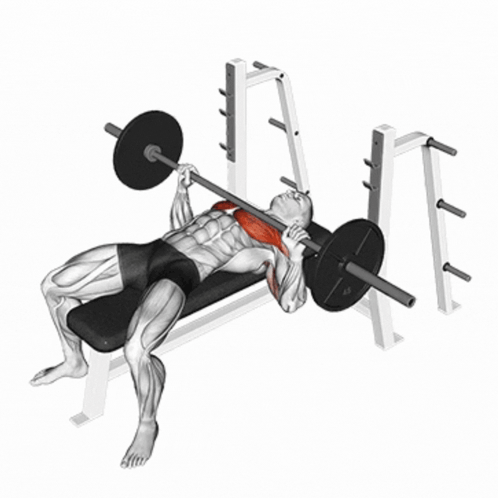
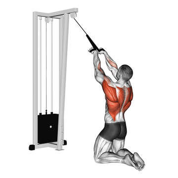
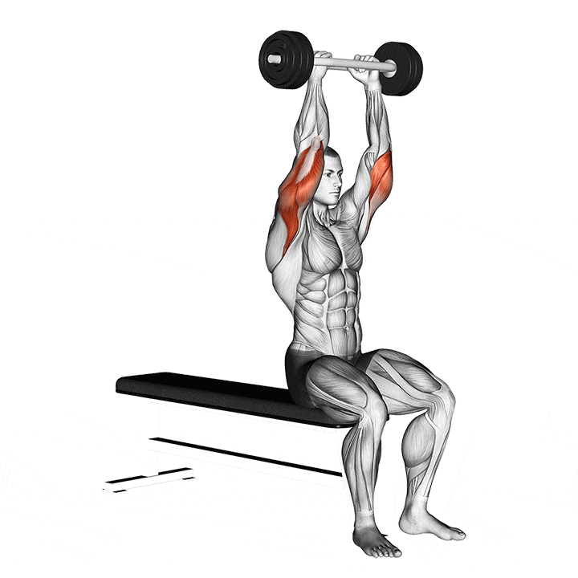
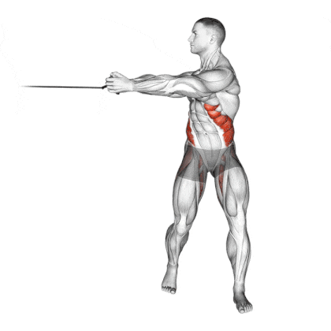
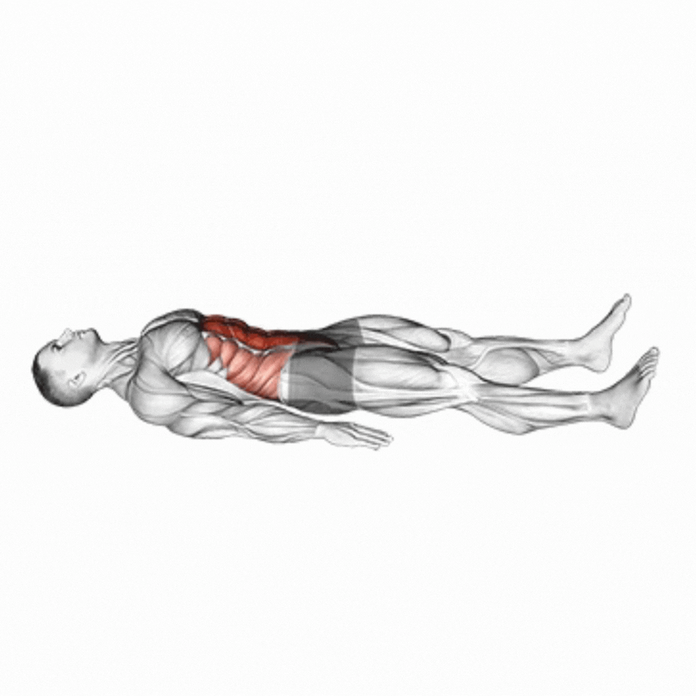
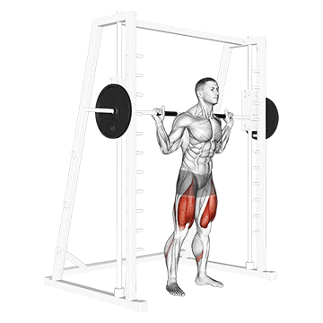

Cet exercice se réalise à la machine à poulies. Debout, les bras légèrement fléchis, tu ramènes les poignées vers l’avant en contractant les pectoraux, puis tu contrôles le retour.
Pec Deck / Chest Fly machine
Assis sur la machine, les avant-bras posés sur les coussins, tu rapproches les bras devant toi en serrant la poitrine, puis tu reviens lentement à la position de départ.
Développé couché à la barre

Allongé sur un banc, tu descends la barre au niveau de la poitrine puis tu la pousses vers le haut jusqu’à l’extension presque complète des bras.
Exercices Dos
Tractions assistées à la machine
en position suspendue avec les genoux posés sur le support, tire lr corps vers le haut jusqu’à ce que le menton arrive au niveau de la barre, puis redescend lentement.
Tirage vertical à la poulie haute (à genoux)

tire la poignée vers le haut de la poitrine en ramenant les coudes vers l’arrière, puis contrôle la remontée du câble.
Rowing sur machine avec charge
tire les poignées vers le torse tout en gardant le dos droit, puis revient lentement à la position initiale.
Exercices Epoules
Upright Row avec Disque
Tenez le poids de la barre de câble devant vous, bras tendus. Tirez le poids verticalement vers le haut jusqu'au niveau de votre menton ou de la clavicule, en gardant les coudes pointés vers le haut. Redescendez lentement pour solliciter les épaules et les trapèzes.
Développé Militaire Assis
Asseyez-vous, tenez les haltères aux épaules, puis poussez-les vers le haut jusqu'à l'extension presque complète des bras. Redescendez les haltères lentement et sous contrôle. Ce mouvement est l'un des meilleurs pour renforcer les deltoïdes (épaules).
Exercices Bras
Extension Triceps Assis

Saisissez la barre, asseyez-vous droit et levez la barre au-dessus de la tête. Abaissez lentement la barre derrière la tête en fléchissant les coudes, puis remontez-la en contractant fortement les triceps.
Curl au Câble (Prise Marteau)
Cet exercice, le Curl au Câble en prise marteau, s'effectue debout en tirant une corde vers le haut. Il cible intensément les biceps ainsi que les muscles de l'avant-bras (le brachial et le brachio-radial).
Exercices Abdos
Crunch au Câble Debout
Cet exercice sollicite principalement le grand droit de l'abdomen (les abdominaux du "six-pack"). Il s'exécute en fléchissant le buste vers l'avant contre la résistance du câble.
Rotation au Câble (Woodchopper)

Ce mouvement de rotation et de torsion du buste, souvent appelé "Woodchopper", est excellent pour travailler les obliques (muscles latéraux de l'abdomen) ainsi que les muscles profonds du tronc.
Crunch au Câble Debout

Cet exercice sollicite principalement le grand droit de l'abdomen (les abdominaux du "six-pack"). Il s'exécute en fléchissant le buste vers l'avant contre la résistance du câble.
Exercice Jambes
Extension des Jambes à la Machine
Cet exercice s'effectue assis sur une machine spécifique, consistant à étendre les jambes vers l'avant. Il est excellent pour isoler et renforcer les quadriceps (muscles de l'avant de la cuisse).
Squat à la Smith Machine

Il s'agit d'un squat réalisé dans un cadre guidé (Smith machine). Le mouvement cible principalement les quadriceps et les fessiers, permettant une stabilisation et une concentration accrues sur les jambes.